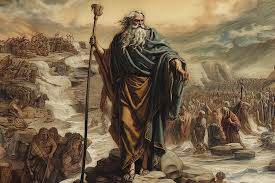

Ramses II and the Story of Moses
According to religious texts, Moses led the Israelites out of Egypt under the rule of a pharaoh often identified as Ramses II. Their story involves themes of liberation and divine intervention.
According to religious texts, Moses led the Israelites out of Egypt under the rule of a pharaoh often identified as Ramses II. Their story involves themes of liberation and divine intervention.